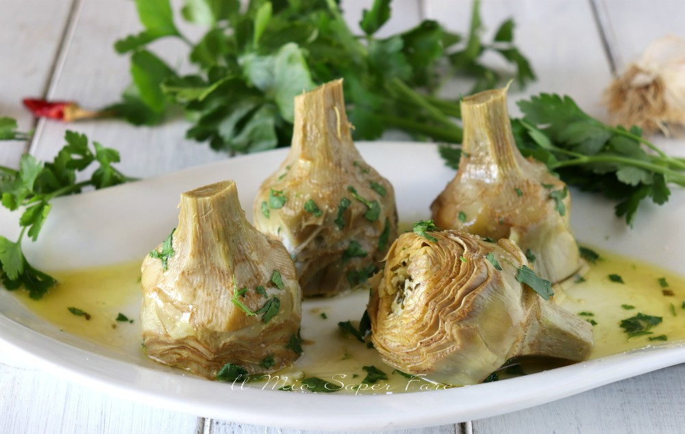

Paella Valenciana
- País: España
Ciudad: Valencia
- Descripción:
La paella es un plato originario de Valencia (España).
Su ingrediente principal es el arroz, habitualmente acompañado por mariscos,
pollo, legumbres y otros alimentos. Al recipiente que se emplea para elaborar
la paella se lo conoce como paellera o incluso como paella.
- Imagen:

- Ingredientes:
- Arroz con D.O. valenciana (400g)
- Pollo (800g)
- Conejo
- 1 docena de vaquetes (caracoles)
- tavella (150g)
- Garrofó (400g)
- Ferradura (250g)
- 1 dl de aceite de oliva
- 1 diente de ajo pelado y picado
- 1 tomate maduro pelado
- 1/2 cuchara de pimenton
- Azafrán en hebras
- Sal
- Romero(ramita optativa)
- Elaboración:
Cortamos el pollo y el conejo en 10 trozos regulares cada uno,
los salaremos, pondremos el aceite a calentar en la paellera y sofreiremos muy bien
y lentamente los trozos de pollo y conejo. Unavez sofrita la carne, se echa la verdura
dándole igualmente un sofrito. A continuación se añade el ajo, el pimentón y el tomate.
Seguidamente se ponen 1´2 litros de agua y las “vaquetas” engañadas anteriormente al sol.
Todo esto se deja cocer durante 10 minutos.
Seguidamente se ponen las hebras del azafrán y el arroz repartido por toda la superficie
de la paellera y se deja cocer a fuego muy vivo durante 8 minutos. A continuación se le
quita fuego con el fin de que hierva a fuego lento durante 8 minutos más, para que coja
el punto de “socarrat”.
- WEB:
Si quieres visitar la pagina web de donde hemos cogido la receta pincha aqui
- PDF:
Para ver el PDF de la receta y la elaboración picha aqui
- Tiempo climatico en Valencia:
Carciofi alla Romana
(Alcachofas a la romana)
- País: Italia
Ciudad: Roma
- Descripción:
Carciofi alla Romana, las alcachofas a la romana, son una receta de Roma,
clásica y al mismo tiempo sencilla, con la que se rellenan las alcachofas con hierbas fragantes
y seguidamente se estofan. El resultado son alcachofas muy tiernas y sabrosas que cambiará
para siempre tu opinión sobre esta hortaliza a menudo intimidante..
- Imagen:

- Ingredientes para cuatro personas:
- 8 alcachofas
- 50 gramos de perejíl
- Zumo de 1 limón
- 1 diente de ajo
- Aceite de Oliva
- Sal
- Menta fresca
- 250 ml de agua
- Pimienta
- Elaboración:
Limpiamos las alcachofas eliminando las hojas más duras y la pelusa interior, le cortamos
la base de modo que se sostenga en el plato. Cogemos la alcachofa por la base y presionamos
con fuerza sobre el mármol de la cocina para que se abra, las colocamos entonces durante unos minutos
en un recipiente en agua fría con un poco de zumo de limón para evitar que se oxiden y se oscurezcan.
Las sacamos y salamos la parte interior. Cortamos, limpiamos y secamos el perejil que lo trituraremos
con la menta y el ajo, lo salpimentamos todo y le añadimos un chorrito de aceite, con ello regamos las alcachofas.
Ya sólo nos queda colocar las alcachofas en una cazuela alta cubriéndolas hasta la mitad con aceite y
el resto con agua, dejamos cocer a fuego lento hasta que el agua se evapore. En 40 minutos estarán listas para comer.
- WEB:
Si quieres visitar la pagina web de donde hemos cogido la receta pincha aqui
- PDF:
Para ver el PDF de la receta y la elaboración en Italiano picha aqui
- Tiempo climatico en Roma: